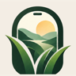

At home
Load the film.
Tell it where you're going. Gemma, an open-weight model on your computer, writes six quests for the season and the light.
“Find a seed, cone or berry still on its plant.”

Touch Grass, Not Glass Open the cameraOpen-source AI · on your own machine
Six small things to find. The screen goes dark. You go and look. Back home, an AI on your own computer develops your roll.
At home
Tell it where you're going. Gemma, an open-weight model on your computer, writes six quests for the season and the light.
“Find a seed, cone or berry still on its plant.”
Outside
One quest at a time, read aloud. No preview, no feed. Find it, tap I found it, take one photo, and put the phone away.
Works with no signal at all.
Back home
Gemma looks at each photo, writes down what it actually sees, then decides whether you found it. Your walk becomes a field journal.
About two minutes a photo. Put the kettle on.
Out of the darkroom
Written by Gemma 3 (4B) on a laptop CPU. No GPU, no internet.
It's a small model, and it makes mistakes: it called a slug a snail. We left that in. With open weights, you can swap in a bigger model or fine-tune one.
Why open-weight AI
FAQ
Tap Load film to get six things to find. Go outside. Each time you find one, tap I found it and take a photo. At home, open the roll on your computer and tap Develop.
That's on purpose. Checking every photo on the spot would mean standing on the trail watching a spinner, which is exactly the screen time we're removing. Like film, you find out later.
No. They're stored on your device and only ever sent to the AI on your own computer. There are no accounts, no analytics and no server.
Any phone for walking. For developing: a computer with the free Ollama and the gemma3:4b model. No graphics card needed. The quick start takes about five minutes.
How much of your walk the screen was off. It's the only number the app keeps.